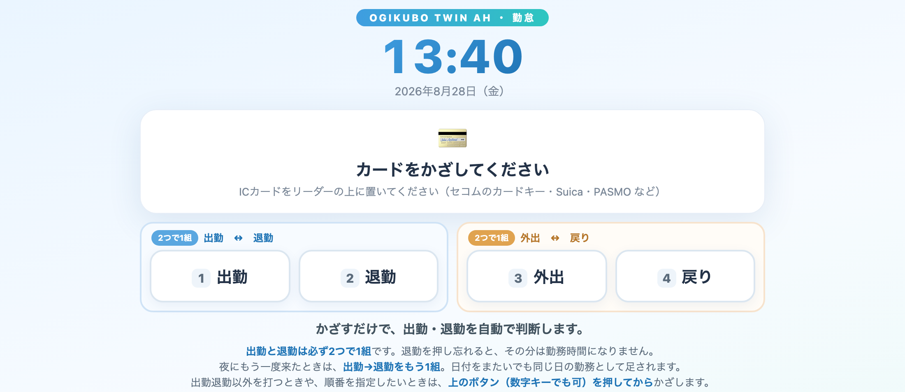
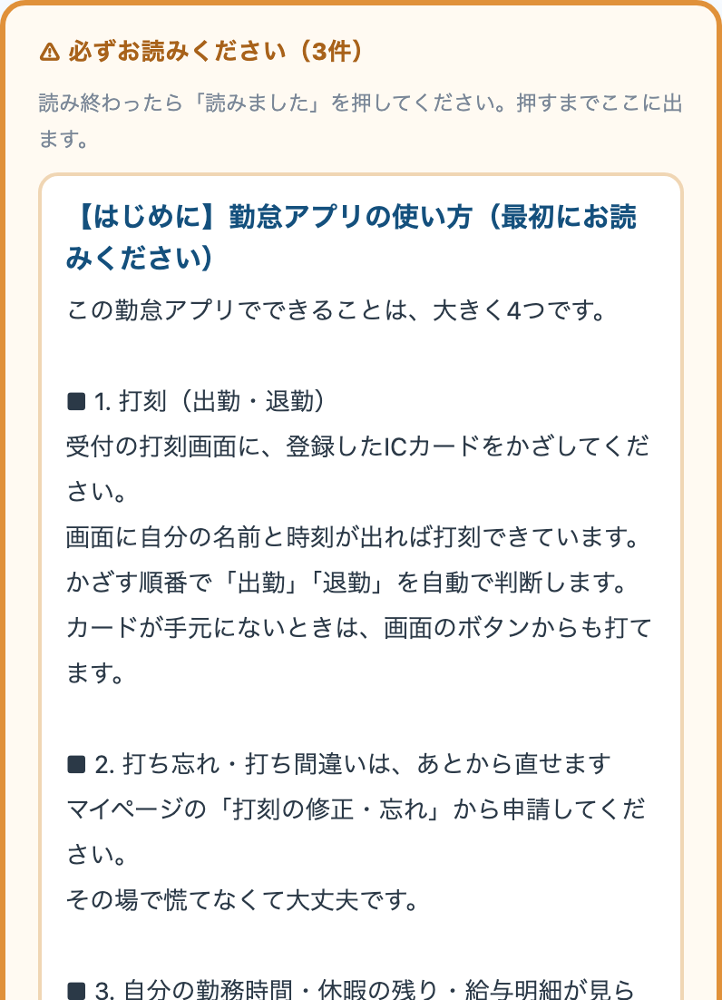

受付の打刻画面に、登録したICカードをかざしてください。それだけです。画面に自分の名前と時刻が出れば打刻できています。

ご自分で、受付の打刻画面から登録できます。パスワードは要りません。
| 使えるカード | セコムのカードキー／Suica・PASMO などの交通系ICカード |
|---|---|
| 登録できる枚数 | 1人2枚まで（例：セコムのカードと定期券） |
| 使えないもの | iPhone・Apple Watch のタッチ決済。かざすたびに番号が変わるしくみのため、登録できません |
カードが手元にないときや、外出・戻りを打つときは、画面のボタンから打てます。ボタンは2つで1組に並んでいます。
| 組 | ボタン | 使うとき |
|---|---|---|
| 仕事の始めと終わり | 1 出勤 | 仕事を始めるとき |
| 2 退勤 | 仕事を終えるとき | |
| 途中で抜けるとき | 3 外出 | 途中で私用などで抜けるとき |
| 4 戻り | 抜けた後に戻ったとき |
| どこで | アドレス |
|---|---|
| 院内のPC | http://192.168.20.250:4100/my |
| 自分のスマホ・自宅から | https://serverpc.tail2de5bb.ts.net:8453/my |
| 項目 | 内容 |
|---|---|
| お知らせ | 院長・永野さんからの連絡と、いつでも読める案内（→ 3章） |
| 今週の予定 | 今日から1週間ぶんのシフト |
| 休暇の残り | 有給などの残日数（今日の時点）。これからの付与予定も出ます |
| 勤務時間 | その月の勤務時間・時間外 |
| 給与明細 | 確定した月の明細が見られます（ここだけPINをもう一度入れます） |
| 打刻履歴 | 月ごとに見られます。打ち忘れがないか、ここで確認できます |
| 申請の履歴 | 出した申請と、その状態 |
連絡ごとや、読んでおいてほしい案内が、マイページに届きます。

| 連絡 | そのときどきのお知らせ（年末年始の勤務、締めのお願い など） |
|---|---|
| いつでも読める案内 | はじめての方向けの使い方、有給休暇のこと、勤怠のきまり、このガイド など。いつでも読み返せます |
マイページの申請から出します。
| 申請 | こんなとき |
|---|---|
| 打刻の修正・打刻忘れ | 打ち忘れた・押せなかった・時刻が違うとき |
| 休暇の申請 | 有給を取りたい。午前休・午後休も選べます |
| シフト変更 | 特定の日だけ早番・遅番などを変えたいとき |
| 遅刻届（遅延証明書） | 電車の遅れなどで遅くなったとき。証明書の写真も付けられます |
| 中抜けの申請 | 途中で抜けた時間を届け出るとき |
| 勤務時間の分割 | 1日の勤務を分けたとき（残った時間をどこに回すかも選べます） |
| 交通費 | その月の交通費を申請するとき |
| 出勤予定 対象の方だけ | 決まったシフトが無い方が、働く予定の日をカレンダーで登録します（→ 5章） |
シフトが決まっていない働き方の方は、働く予定の日をご自身で前もって登録してください。マイページの申請に「🗓 出勤予定」が出ている方が対象です。
| いつ付くか | 入社から6か月後に初めて付き、その後は毎年同じ日に付きます |
|---|---|
| 何日つくか | 法律（労働基準法39条）のとおりです。週5日勤務の方は6か月で10日 → 11 → 12 → 14…と増えます。週4日以下でお勤めの方は日数に応じた日数が付きます（例：週4日なら6か月で7日） |
| いつまで使えるか | 付いた日から2年 |
| 残りの確認 | マイページの休暇残でいつでも見られます（今日の時点） |
| 取るとき | マイページの🌴 休暇から申請（上の「★申請の前に」を必ず） |
出勤簿で、月ごとの出退勤の一覧が見られます。給与の元になる記録なので、月末に一度、自分の分に打ち忘れがないか見ておいてください。
おかしなところがあれば、その日の申請から直せます。分からなければ永野さんか院長へ。
きまりのページに、就業規則から勤務時間・休憩・残業・休日・休暇のところをまとめてあります。「これは有給で取れるんだっけ？」と迷ったらここを見てください。
シフトと休みは、翌朝に自動で予約システムへ反映されます（出勤していない日は予約枠が開かない）。そのためシフトの変更や休暇の申請は、できるだけ早めにお願いします。当日に直しても、予約の枠に反映されるのは翌朝になります。
| 症状 | どうするか |
|---|---|
| カードをかざしても反応しない | もう一度ゆっくりかざす。それでも駄目なら画面のボタンで打刻して、後で永野さんへ |
| 「登録されていないカードです」と出る | まだカードの登録が済んでいません。1-2 の手順で登録してください（30秒） |
| スマホをかざしたら「これは登録できません」と出る | iPhone・Apple Watch のタッチ決済は登録できません。カードをお使いください |
| 打刻を忘れた | 打刻の修正・打刻忘れから直せます。放置せずその週のうちに |
| PINを忘れた | 院長へ。リセットします |
| スマホから開けない | Tailscaleの設定が済んでいない可能性。院長へ |
| お知らせが消えない | 本文の下の「読みました」を押すと消えます。押すまで残る仕組みです |
| 休暇の残りが思っていたのと違う | まず6章ときまりを確認。それでも違うと思ったら永野さんか院長へ |
| 給与明細が出ていない | その月がまだ確定していない可能性があります。支給日を過ぎても出ないときは院長へ |